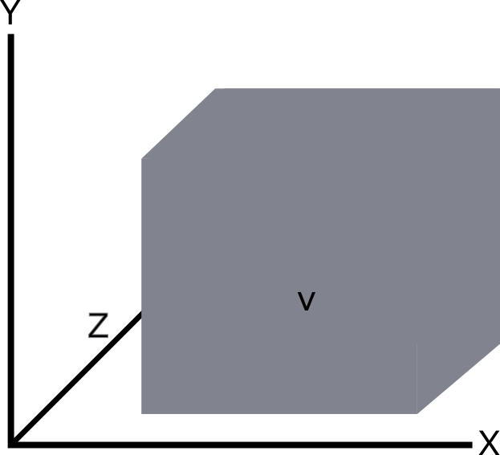

Los objetros tridimensionales son aquellos que se presentan en 3 dimensiones, presentandose en un espacio tridimensional, o sea, el mundo real tal y como lo percibimos nosotros, siendo representado en los ejes X, Y y Z
Geometria Tridimensional
Siendo los objetos tridimensional objetos reales, estos ocupan un lugar en el espacio y, por ende, se pueden realizar calculos matemáticos con ellos, presentando las siguientes caracteristicas:
Altura: Distancia en el eje Y desde la base del objeto (donde Y = 0) hasta el punto más alejado de la base en eje Y. Suele ser representado con la letra 'h'
largo: Tambien llamada "Base" representa la distancia en el eje X desde el inicio del objeto (X = 0) hasta el punto más alejado del origen en el eje X. Suele ser representado con la letra 'l'
Profundidad: Tambien llamado "Anchura", es la distancia entre el origen del objeto en el eje Z (Z = 0) hasta el punto más alejado de este en ese eje. Se suele representar con la letra 'a'
Superficie: Suma de todas las areas exteriores que conforman el objeto. Suele se representado con la letra 's'
Volumen: Es toda la zona que cubre el objeto tridimensional (cerrado), o sea, todo lo que se encuentre dentro de la union de sus caras. Suele ser respresentado con la letra 'v'

Perimetro: La distancia total recorrida por todos los lados que componen la figura. Suele representarse con la letra 'P'
Calculos para la obtensión de las caracteristicas de los objetos tridimensionales
El calculo de estos elementos varía dependiendo de la figura geometrica, por lo que aqui presentaremos la de aquellas figuras más utiles y conocidas